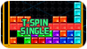
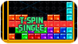

En Tetris Party, usa las siguientes técnicas para ganar puntos extra además de enviar bloques de penalización al campo del oponente.

Los puntos extras se ganan al hacer 4 líneas con el Tetrimino-I. Es una de las técnicas clásicas de Tetris.


Los puntos extra se
conceden por hacer líneas
consecutivas. En el momento
en que dejas de hacer líneas
consecutivas, se acaban los puntos extra.

Se conceden puntos extras
al eliminar todos los bloques
del campo. Estos puntos no
se conceden si usas objetos como "Patear línea".

Una cadena que combine sucesivamente "TETRIS",
"T-SPIN SINGLE" y
"T-SPIN DOUBLE" concede puntos extra. Si la cadena queda interrumpida por otra técnica para eliminar bloques (por ejemplo, un DOBLE normal), no se otorgarán los puntos extra.

 
